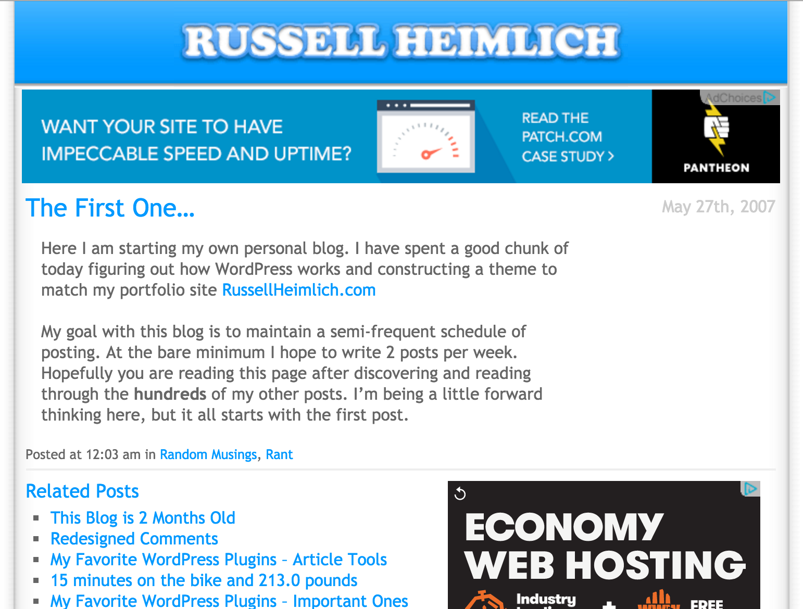
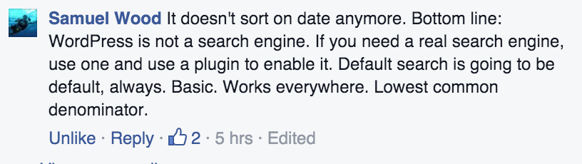
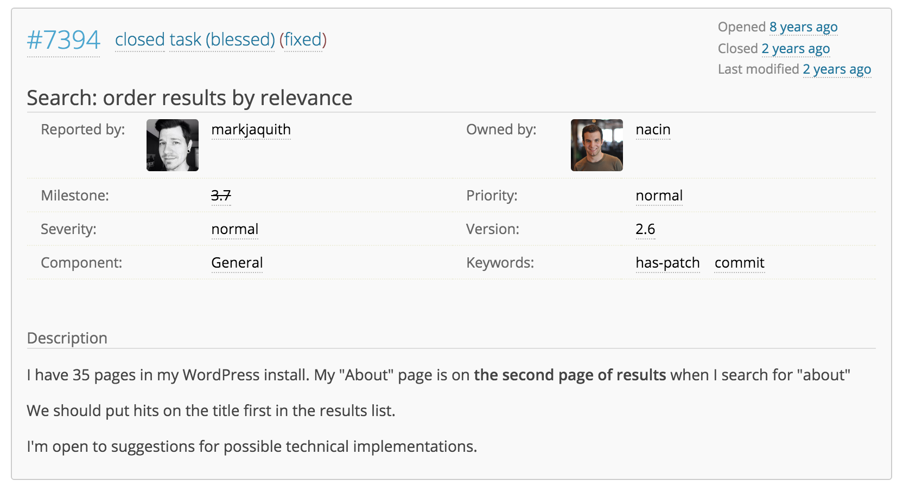
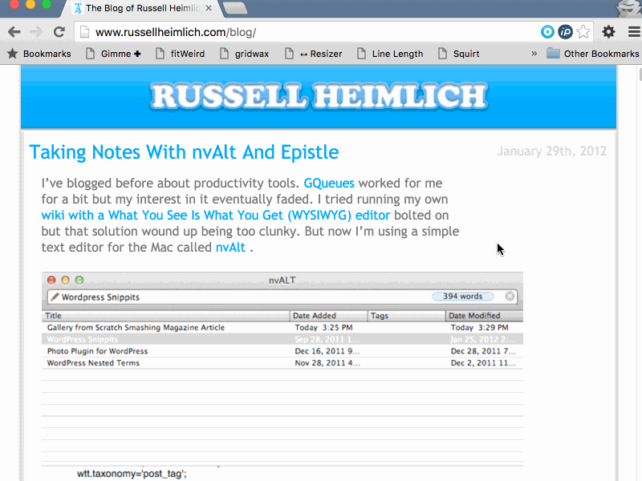
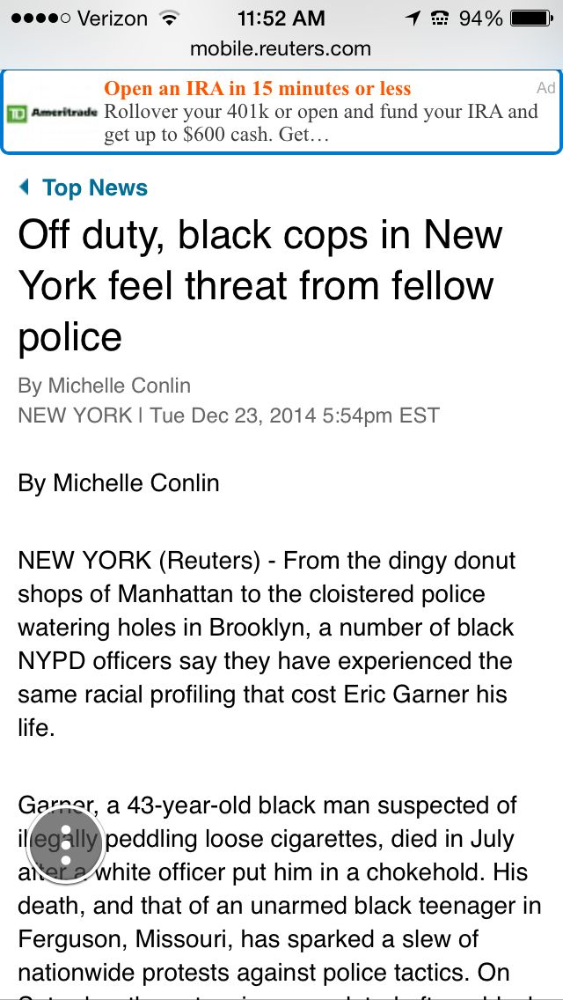

Searching for a Better WordPress Search
Follow Along
v.gd/wpsearchWhat This Talk Will Cover
- What’s Wrong with Search
- Plugins & Services to Improve Search
- Q&A
About Me
I’ve been playing with WordPress since 2007
Work at Forum One
I joined Twitter before @twitter Joined Twitter
When I’m not coding…
What’s Wrong with Search?
Common Complaints of WordPress’ Search
- Slow
- No options/customizations
- Irrelevant results
Search is Hard!
- Look through all posts in the database
- Find posts matching keyword(s)
- Determine most relevant results
- Output results via a template
- Do all of this in under a few seconds!
WordPress is designed for broad compatibility
- “It just works” under all kinds of server configurations
- Commodity hardware can be slow/constrained
- MySQL is not a search engine
WordPress is not a search engine!
How Does a WordPress Search Work?
Pre 3.7
Search for “term”
SELECT SQL_CALC_FOUND_ROWS wp_posts.id
FROM wp_posts
WHERE 1 = 1
AND (( ( wp_posts.post_title LIKE '%term%' )
OR ( wp_posts.post_content LIKE '%term%' ) ))
AND wp_posts.post_type IN ( 'post', 'page', 'attachment' )
AND ( wp_posts.post_status = 'publish'
OR wp_posts.post_author = 1
AND wp_posts.post_status = 'private' )
ORDER BY wp_posts.post_date DESC
LIMIT 0, 10 - Find posts where the post title or the post content contains “term”
- Sort the results by post date in descending order (reverse chronological)
Search for “search term”
SELECT SQL_CALC_FOUND_ROWS wp_posts.id
FROM wp_posts
WHERE 1 = 1
AND ( ( ( wp_posts.post_title LIKE '%search%' )
OR ( wp_posts.post_content LIKE '%search%' ) )
AND ( ( wp_posts.post_title LIKE '%term%' )
OR ( wp_posts.post_content LIKE '%term%' ) ) )
AND wp_posts.post_type IN ( 'post', 'page', 'attachment' )
AND ( wp_posts.post_status = 'publish'
OR wp_posts.post_author = 1
AND wp_posts.post_status = 'private' )
ORDER BY wp_posts.post_date DESC
LIMIT 0, 10 - Find posts where…
- the post title or the post content contains “search”
- AND the post title or the post content contains “term”
- Sort the results by post date in descending order (reverse chronological)
Trac Ticket #7394
Sorting Search by Relevance
A long time in the making…
- Opened July 24, 2008
- Closed October 2, 2013
- 5 Years, 2 months, 8 days!
{kind=link}
From WordPress 3.7 and later searches are sorted by relevancy by default
(except for feeds)
The ordering logic is as follows:
via Changeset 25632
- Full sentence matches in post titles
- All search terms in post titles
- Any search terms in post titles
- Full sentence matches in post content
Search for “term”
SELECT SQL_CALC_FOUND_ROWS wp_3_posts.id
FROM wp_3_posts
WHERE 1 = 1
AND (( ( wp_3_posts.post_title LIKE '%term%' )
OR ( wp_3_posts.post_content LIKE '%term%' ) ))
AND wp_3_posts.post_type IN ( 'post', 'page', 'attachment' )
AND ( wp_3_posts.post_status = 'publish'
OR wp_3_posts.post_status = 'private' )
ORDER BY wp_3_posts.post_title LIKE '%term%' DESC,
wp_3_posts.post_date DESC
LIMIT 0, 10 - Find posts where the post title or the post content contains “term”
- Sort the results by…
- posts where the post tile contains “term”
- post date in descending order (reverse chronological)
Search for “search term”
SELECT SQL_CALC_FOUND_ROWS wp_3_posts.id
FROM wp_3_posts
WHERE 1 = 1
AND ( ( ( wp_3_posts.post_title LIKE '%search%' )
OR ( wp_3_posts.post_content LIKE '%search%' ) )
AND ( ( wp_3_posts.post_title LIKE '%term%' )
OR ( wp_3_posts.post_content LIKE '%term%' ) ) )
AND wp_3_posts.post_type IN ( 'post', 'page', 'attachment' )
AND ( wp_3_posts.post_status = 'publish'
OR wp_3_posts.post_status = 'private' )
ORDER BY ( CASE
WHEN wp_3_posts.post_title LIKE '%search term%' THEN 1
WHEN wp_3_posts.post_title LIKE '%search%'
AND wp_3_posts.post_title LIKE '%term%' THEN 2
WHEN wp_3_posts.post_title LIKE '%search%'
OR wp_3_posts.post_title LIKE '%term%' THEN 3
WHEN wp_3_posts.post_content LIKE '%search term%' THEN 4
ELSE 5
end ),
wp_3_posts.post_date DESC
LIMIT 0, 10 - Find posts where…
- the post title or the post content contains “search”
- AND the post title or the post content contains “term”
- Sort the results by…
- posts that contain “search term” in the post title
- posts that contain “search” AND “term” in the post title
- posts that contain “search” OR “term” in the post title
- posts that contain “search term” in the post content
- post date in descending order (reverse chronological)
GIF Break
Plugins
Pros
- Search custom post types, terms, fields
- Lots of options to tweak
- Search query logging
- Free and Premium versions
Cons
- Extra load on your server
- Performance issues with larger amounts of content
- Hard to remember how to spell
Pros
- Native to WordPress
- Configurable through wp-admin
- Search stats
- bbPress integration
- PDF Indexing
- Multiple Search Engines
Cons
- Extra load on your server
Pros
- Integrates with your theme
- Index is built through crawling
- Multisite support
- Ad free
Cons
- Pricing
- Cap on queries per year
- Google’s Developer Console is confusing
Pros
- Drag and drop to reorder results
- PDF indexing
- Faceted Search
- Analytics
- Developer API
- Two ways to build search index: web crawler or API
- No hardware to manage
Cons
- Pricing ($249/month or $2,988/year)
- Top-query report is enterprise only
Pros
- Your own mini-Google
- Self-learning Ranking
- XML version of results
- OneBox support (i.e. “weather 90210” returns weather results )
- Search behind a firewall or authentication
- Index 220 content types (PDF, Microsoft Office, databases)
Cons
- “If you have to ask you probably can’t afford it” pricing
- Manage Google-provided hardware
- Highly technical
- No WordPress plugin
- End of life 2017
Screw It! Just Use Google
Pros
- Easy
- Free (GitHub Repo)
- No maintenance
- Just as good as Google
Cons
- No customizations
- Linking off your site
- Not professional?
Except mobile.reuters.com did this!
Pros
- Super Flexible
- Integrates with WP_Query
- Faceted Search
- Multisite Support
- Proximity/Geograpic Queries
- Free (plugin & Elasticsearch software)
- Open Source
Cons
- WP-CLI required
- Server management required
- Highly technical
- Aimed at developers
Setting up Elasticsearch & ElasticPress
Set-up Elasticsearch
- Amazon’s Elasticsearch service ($15-30/month)
- Elastic Cloud Standard ($45/month)
- Qbox.io ($12.50/month)
- Digital Ocean Droplet* ($5/month)
Install Plugin and WP-CLI
- See the ElasticPress plugin page
- See WP-CLI.org
Define the address of your Elasticsearch instance
Add the following to wp-config.php with the IP address (and port) of your Elasticsearch instance:
define( 'EP_HOST', 'http://192.168.1.2:9200' );Start the initial sync
Single site
wp elasticpress index --setupMultisite
wp elasticpress index --setup --network-wide